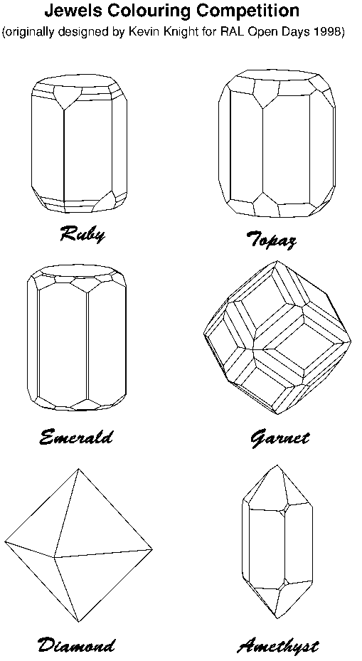

Colouring Competition Jun 98
Page of 'Jewels' to colour
The page below was designed by Kevin Knight, of RAL, for use in the laboratory
'Open Days' in June 1998.
You can see these in two ways, either as the image below

or
Click here to see the page as a Postscript file,
which gives better resolution, but your browser may not be able to display
it. In that case you can download the file and print it if you have a
Postscript printer,
Page last updated 2 Jan 1999
BCA Home page WebMaster
BCA@ISISE.RL.AC.UK
 Click here to return to BCA homepage
Click here to return to BCA homepage